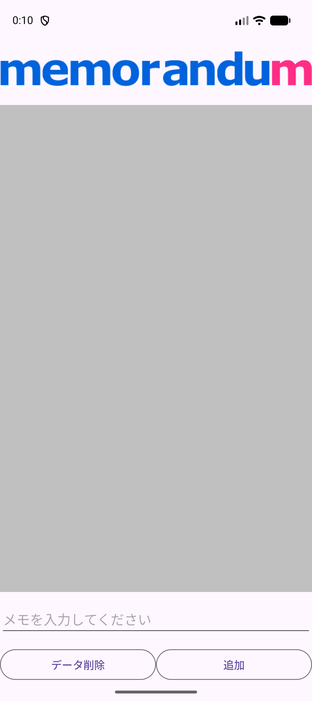
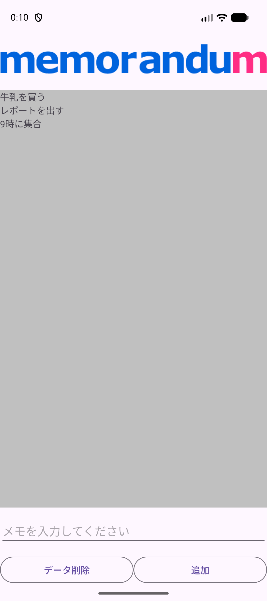
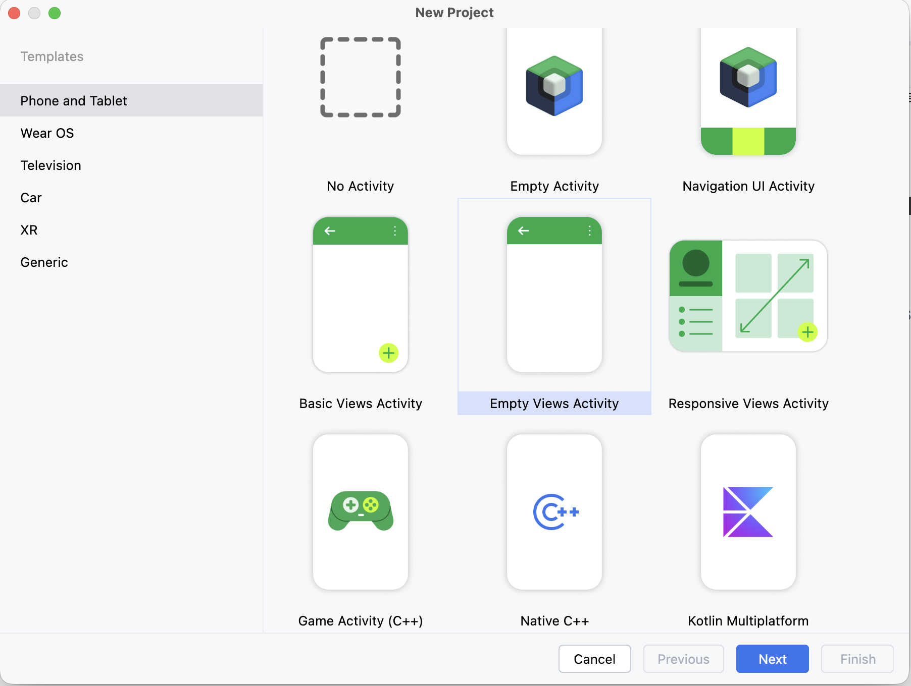
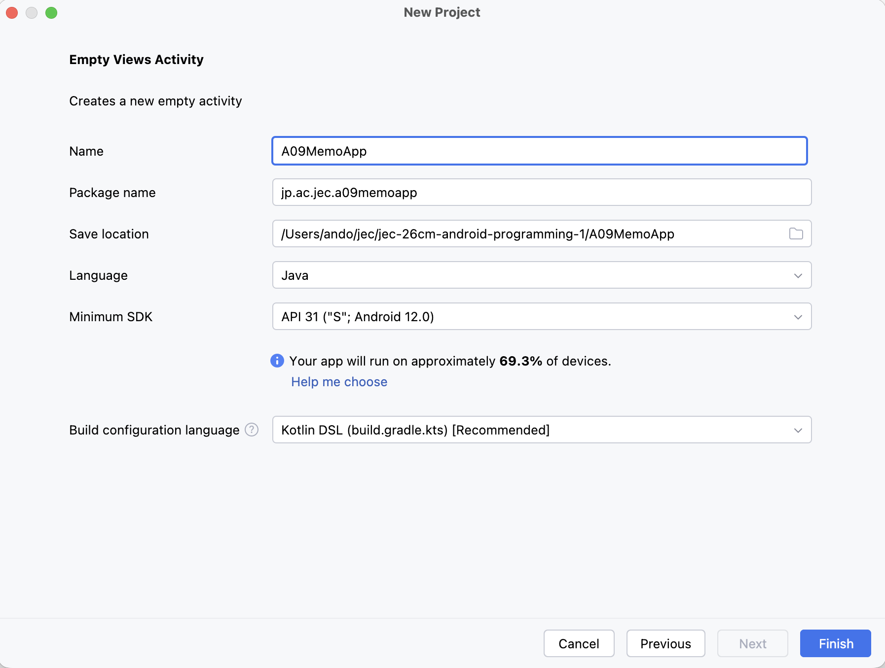
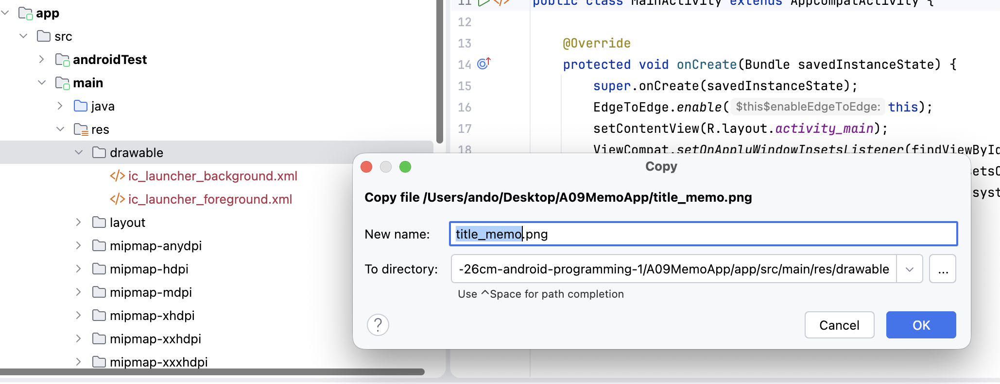
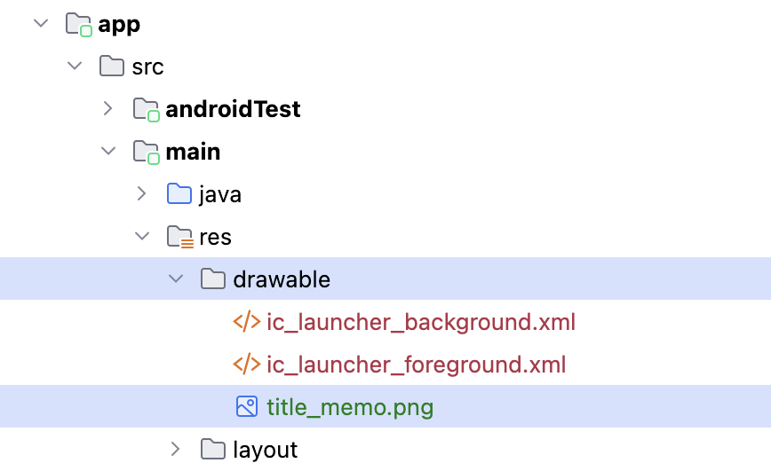
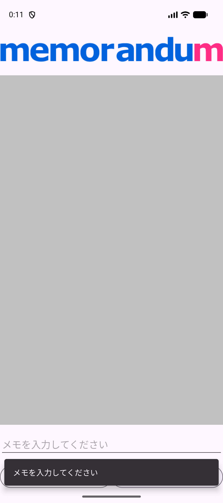

MEMO APP
消えないメモ帳を
作ろう
メモを書く。一覧に増える。アプリを閉じても残っている。
A08で学んだ保存を、毎日使えるアプリにします。
今日のゴール
メモを書いて一覧にためるアプリを作ります。A08では値を保存する練習をしましたが、今回はそれを実際に使えるアプリにします。
{kind=link}

{kind=link}

できるようになること
- 入力した文字を、一覧に1行ずつ増やせる。
- 何も入れずに押されたときに、メッセージで知らせて止められる。
- アプリを終了しても、書いたメモが残るようにできる。
- 保存したメモをまとめて消せる。
今日使う技術
| 技術 | どこで使うか | 学んだ単元 |
|---|---|---|
EditText と Button | メモを入力して、追加する。 | A07 |
Snackbar | 入力が空のときに知らせる。 | A07 |
TextView.append | 一覧に1行ずつ足す。今回の新顔です。 | — |
SharedPreferences | メモを保存して、次に開いたときに読み出す。 | A08 |
新しく覚えることは append だけです。残りはA07とA08で使ったものを組み合わせます。
1件だけ消す機能はありません
このアプリの削除は「全部消す」だけです。1件だけ消すには RecyclerView という部品が必要で、Androidプログラミング2で扱います。
ここで止まって、確認
できたらチェックします。困ったときはSTEP番号と画面を先生に見せましょう。
プロジェクトを作って実行
授業環境はMacと Android Studio Panda 2 | 2025.3.2 です。A08までとは別のプロジェクトを作ります。
毎回、自分で新規作成します
作る場所は Documents/Android1/A09MemoApp です。完成プロジェクトは答え合わせ用で、授業の入力は自分で作ったプロジェクトに書きます。
- Android Studioの New Project をクリックします。別のプロジェクトを開いているときは File → New → New Project を選びます。
- Phone and Tablet → Empty Views Activity → Next の順に選びます。名前に Views があることを確認します。
{kind=link}

- 次の表のとおりに入力・選択して Finish を押します。
| 項目 | 入力・選択する内容 |
|---|---|
| Name | A09MemoApp |
| Package name | jp.ac.jec.a09memoapp（すべて小文字） |
| Save location | /Users/ユーザ名/Documents/Android1/A09MemoApp |
| Language | Java |
| Minimum SDK | API 31 ("S"; Android 12.0) |
| Build configuration language | Kotlin DSL (build.gradle.kts) [Recommended] |
{kind=link}

Documents/Android1/A09MemoApp に読み替えます。 画像を大きく開く- Sync（歯車の読み込み）が終わるまで待ちます。
- 端末欄で jec_26cm_android1_Pixel 9a を選び、Run（▶）を押します。白い画面に Hello World! が出れば成功です。
エミュレータが出てこないときは共通資料：エミュレータを見ます。
ここで止まって、確認
できたらチェックします。困ったときはSTEP番号と画面を先生に見せましょう。
タイトル画像を入れる
タイトル画像の title_memo.png をダウンロードして、プロジェクトに入れます。A03・A05・A07でやった手順と同じです。
- title_memo.png を押します。教科書の開き方とブラウザによって、押したあとの動きが変わります。下の表を見て、ダウンロード フォルダに保存します。
{kind=link}
| ボタンを押したあと | すること |
|---|---|
| 画像が大きく表示された | 画像の上で右クリックし、画像を保存する項目を選びます。Chromeは 名前を付けて画像を保存…、Safariは イメージを"ダウンロード"に保存 です。保存先を聞かれたら、名前は変えずに ダウンロード フォルダへ保存します。保存したら、ブラウザの ←（戻る）で教科書に戻ります。 |
| ダウンロードが始まった | そのままで大丈夫です。ブラウザが ダウンロード フォルダに保存しています。 |
- Finderを開き、左側の ダウンロード をクリックします。
title_memo.pngを選び、コピーします（⌘ C）。 - Android Studioのプロジェクト画面で
app/src/main/res/drawableフォルダをクリックして選び、貼り付けます（⌘ V）。 - 確認のウィンドウが出ます。New name が
title_memo.png、To directory の末尾がapp/src/main/res/drawableになっていることを確かめて OK を押します。
{kind=link}

drawableフォルダの中にtitle_memo.pngが増えていれば成功です。
{kind=link}

title_memo.png が増えれば成功。 画像を大きく開くファイル名は変えません
このあとXMLから @drawable/title_memo という名前で呼び出します。名前を変えると見つからなくなります。大文字や日本語も使えません。
Runで確かめる
画面はまだ Hello World! のままです。エラーが出ずにRunできれば成功です。画像を使うのは次のSTEPです。
ここで止まって、確認
できたらチェックします。困ったときはSTEP番号と画面を先生に見せましょう。
画面を作る
app/src/main/res/layout/activity_main.xml を開き、中身をすべて次のコードに置き換えます。
<?xml version="1.0" encoding="utf-8"?>
<LinearLayout xmlns:android="http://schemas.android.com/apk/res/android"
xmlns:tools="http://schemas.android.com/tools"
android:id="@+id/main"
android:layout_width="match_parent"
android:layout_height="match_parent"
android:orientation="vertical"
tools:context=".MainActivity">
<ImageView
android:layout_width="match_parent"
android:layout_height="wrap_content"
android:contentDescription="@null"
android:src="@drawable/title_memo" />
<ScrollView
android:layout_width="match_parent"
android:layout_height="0dp"
android:layout_weight="1"
android:fillViewport="true">
<TextView
android:id="@+id/txt_memo_list"
android:layout_width="match_parent"
android:layout_height="wrap_content"
android:background="#c0c0c0" />
</ScrollView>
<EditText
android:id="@+id/edt_memo"
android:layout_width="match_parent"
android:layout_height="wrap_content"
android:layout_marginTop="12dp"
android:hint="メモを入力してください"
android:importantForAutofill="no"
android:inputType="text" />
<LinearLayout
android:layout_width="match_parent"
android:layout_height="wrap_content"
android:layout_marginTop="12dp"
android:orientation="horizontal">
<Button
android:id="@+id/btn_clear"
style="@style/Widget.Material3.Button.OutlinedButton"
android:layout_width="0dp"
android:layout_height="wrap_content"
android:layout_weight="1"
android:text="データ削除" />
<Button
android:id="@+id/btn_add"
style="@style/Widget.Material3.Button.OutlinedButton"
android:layout_width="0dp"
android:layout_height="wrap_content"
android:layout_weight="1"
android:text="追加" />
</LinearLayout>
</LinearLayout>書いた内容の意味
| 書いたところ | 意味 |
|---|---|
ImageView の @drawable/title_memo | STEP 02で置いた画像を表示する。 |
txt_memo_list | メモの一覧。background で灰色にして、どこまでが一覧か分かるようにしている。 |
ScrollView | 中身がはみ出したときにスクロールできるようにする入れ物。メモが増えて画面に入りきらなくなっても、指でなぞれば続きを読める。A07の参加者一覧と同じ形。 |
layout_height="0dp" と layout_weight="1" | 一覧が残りの高さを全部使うという指定。ScrollViewのほうに付ける。メモが増えても減っても、入力欄とボタンの位置が変わらない。 |
fillViewport="true" | 中身が短いときでも、ScrollViewの高さいっぱいまで広げる。これがないと、メモが少ないときに灰色の背景が途中までしか広がらない。 |
edt_memo の hint | 何も入力していないときに薄く出る案内。入力すると消える。 |
inputType="text" | ふつうの1行の文字入力。 |
横向きの LinearLayout | ボタン2つを横に並べる入れ物。中の2つに layout_weight="1" を付けて、幅を半分ずつにしている。 |
style="@style/Widget.Material3.Button.OutlinedButton" | 枠線だけのボタンの見た目。 |
android:id="@+id/main" は消しません。ひな形のJavaが findViewById(R.id.main) で使っています。文字を直接書いたことによる Hardcoded text の警告は、これまでの単元と同様にそのまま進めます。
Runで確かめる
タイトル画像、灰色の一覧、入力欄、2つのボタンが並べば成功です。押してもまだ何も起きません。
ここで止まって、確認
できたらチェックします。困ったときはSTEP番号と画面を先生に見せましょう。
メモを追加する
まずは保存のことを考えず、画面の中だけでメモを増やせるようにします。
① 部品を受け取る
MainActivity.java を開き、onCreate の中（インセットの処理の下）に書きます。
var txtMemoList = (TextView) findViewById(R.id.txt_memo_list);
var edtMemo = (EditText) findViewById(R.id.edt_memo);TextView と EditText が赤いときは ⌥ Enter で android.widget.TextView、android.widget.EditText を選びます（共通資料：Auto Import）。
② 追加ボタンの処理を書く
findViewById(R.id.btn_add).setOnClickListener(v -> {
var edtMemoStr = edtMemo.getText().toString();
if (edtMemoStr.isEmpty()) {
Snackbar.make(v, "メモを入力してください", Snackbar.LENGTH_SHORT).show();
return;
}
txtMemoList.append(edtMemoStr + "\n");
edtMemo.setText("");
});Snackbar が赤いときは ⌥ Enter で com.google.android.material.snackbar.Snackbar を選びます。
書いた内容の意味
| 行 | 意味 |
|---|---|
edtMemo.getText().toString() | 入力欄の文字を取り出す。getText() の戻り値はそのままでは文字列として扱えないので toString() を付ける（A07と同じ）。 |
if (edtMemoStr.isEmpty()) | 空かどうかを調べる。空ならメッセージを出して return; で処理をやめる。 |
return; | この先を実行しない、という意味。これがないと空のメモが追加されます。 |
txtMemoList.append(...) | 今回の新顔。いまの表示の後ろに足す。setText だと前の内容が消えて1件しか残らない。 |
+ "\n" | 改行。これがないと全部が1行につながる。 |
edtMemo.setText("") | 入力欄を空に戻す。次のメモをすぐ書ける。 |
Runで確かめる
- 何も入力せずに 追加 を押します。画面の下にメッセージが出て、一覧は増えません。
- メモを入力して 追加 を押します。一覧に1行増え、入力欄が空になります。
- 何回か追加して、行が増えていくことを確かめます。
{kind=link}

まだ保存はされていません
アプリを完全に終了して開き直すと、メモは消えます。ここまでは画面の中だけの話だからです。次のSTEPで保存します。
ここで止まって、確認
できたらチェックします。困ったときはSTEP番号と画面を先生に見せましょう。
アプリを終了しても残るようにする
ここが今回の中心です。A08で学んだ SharedPreferences を使います。
① 保存に使う名前を決める
public class MainActivity extends AppCompatActivity { のすぐ下に書きます。
private static final String FILE_NAME = "app";
private static final String MEMO = "memo";A08と同じで、キーは定数にまとめます。直接書くと、打ち間違えても赤いエラーにならず、値だけが見つからなくなります。
② 保存されているメモを表示する
STEP 04①の2行の下、追加ボタンの処理の上に書きます。
var prefs = getSharedPreferences(FILE_NAME, MODE_PRIVATE);
txtMemoList.setText(prefs.getString(MEMO, ""));保存されていないときは第2引数の ""（空の文字）が返るので、初回は一覧が空のままになります。
③ 追加のときに保存する
STEP 04で書いた append の下、edtMemo.setText("") の上に3行を足します。
var edit = prefs.edit();
edit.putString(MEMO, txtMemoList.getText().toString());
edit.apply();A08と同じ edit() → putString → apply() の3ステップです。apply() を忘れると保存されません。
解説：なぜArrayListを使わないのか
保存しているのは txtMemoList.getText().toString()、つまり画面に表示している文字そのものです。改行も含めて、まるごと1つの文字列として保存しています。
A07では参加者を ArrayList にためていました。あれは同じ名前がすでにあるかを調べたり、何人いるかを数えたりする必要があったからです。今回のメモにはそうした判定がありません。
| A07BillSplitter | A09MemoApp | |
|---|---|---|
| ためる場所 | ArrayList と画面の両方 | 画面だけ |
| 理由 | 重複チェックと人数チェックに必要 | 判定をしないので不要 |
| 更新する場所 | 2か所 | 1か所 |
必要のないものを持たないほうが、コードは短く読みやすくなります。「判定が必要になったら、データを別に持つ」と覚えておきましょう。
Runで確かめる
- メモを2〜3件追加します。
- エミュレータでアプリ一覧（最近使ったアプリ）を開き、このアプリを上へスワイプして終了します。
- もう一度アプリのアイコンから起動します。メモが残っていれば成功です。
ここで止まって、確認
できたらチェックします。困ったときはSTEP番号と画面を先生に見せましょう。
データを全部消す
「データ削除」ボタンの処理を、追加ボタンの処理（}); まで）の下に書きます。これで完成です。
findViewById(R.id.btn_clear).setOnClickListener(v -> {
var edit = prefs.edit();
edit.clear();
edit.apply();
txtMemoList.setText("");
});| 行 | 意味 |
|---|---|
edit.clear() | 保存されているデータをすべて消す予約をする。 |
edit.apply() | ここで確定する。これを忘れると消えない。 |
txtMemoList.setText("") | 画面の表示も消す。保存を消しただけでは、画面に出ている文字はそのまま残る。 |
なぜ2つとも消すのか
保存されているデータ（ファイル）と、画面に表示している文字は別のものです。clear() はファイルの中身を消すだけなので、画面は自分で消す必要があります。setText("") を書き忘れると、消したはずのメモが画面に残ったままになり、次に起動したときだけ消えている、という分かりにくい動きになります。
Runで確かめる
- メモを何件か追加します。
- データ削除 を押します。一覧が空になれば成功です。
- アプリを終了して開き直します。空のままなら、保存も消えています。
ここで止まって、確認
できたらチェックします。困ったときはSTEP番号と画面を先生に見せましょう。
完成
完成チェック
| 操作 | 確認する結果 |
|---|---|
| アプリを消してから初回起動 | 一覧が空で表示される。 |
| 何も入れずに「追加」 | 下にメッセージが出て、一覧は増えない。 |
| メモを入れて「追加」 | 一覧に1行増え、入力欄が空になる。 |
| 続けて何件か追加 | 行が1行ずつ増えていく。 |
| アプリを終了して開き直す | メモが残っている。 |
| 「データ削除」 | 一覧が空になる。 |
| 削除のあと終了して開き直す | 空のまま。 |
ミニ練習
予想 → 変更 → Run → 説明 → 元に戻すの順で試します。
練習1：appendをsetTextに変えてみる
STEP 04の txtMemoList.append(edtMemoStr + "\n"); を次のように変えます。
txtMemoList.setText(edtMemoStr + "\n");メモを3件追加すると、一覧はどうなるでしょうか。予想してから試します。
試したあとに答えを見る
最後に追加した1件だけが残ります。setText は「置き換える」、append は「後ろに足す」ためです。保存される内容も1件だけになります。確認後は append に戻します。
練習2：改行を消してみる
同じ行の + "\n" を消します。
試したあとに答えを見る
メモが全部つながって1行になります（牛乳を買うレポートを出す9時に集合）。一覧が「1行ずつ」に見えていたのは、自分で改行を足していたからだと説明できれば十分です。確認後は戻します。
練習3：データ削除からsetTextを消してみる
STEP 06の txtMemoList.setText(""); を消して、メモを追加してから「データ削除」を押します。
試したあとに答えを見る
画面のメモは消えません。でもアプリを終了して開き直すと空になっています。保存（ファイル）と画面の表示は別物で、clear() はファイルしか消さないためです。確認後は戻します。
保存
自分の Documents/Android1/A09MemoApp を保存します。
教材のチェックは自分用です。先生への送信はしません。印刷は ⌘ P で行えます。
ここで止まって、確認
できたらチェックします。困ったときはSTEP番号と画面を先生に見せましょう。
困ったとき
| 困ったこと | 最初に確認する場所 |
|---|---|
TextView、EditText、Snackbar が赤い | ⌥ Enter で android.widget.TextView、android.widget.EditText、com.google.android.material.snackbar.Snackbar を選ぶ。 |
R.id.txt_memo_list などが赤い | activity_main.xmlのidが txt_memo_list / edt_memo / btn_add / btn_clear か確認。android:id="@+id/main" を消していないかも見る。 |
@drawable/title_memo が赤い | STEP 02で drawable に置けているか、ファイル名が title_memo.png か確認する。 |
prefs が赤い（追加や削除の中） | STEP 05②の var prefs = ... を、ボタンの処理より上に書いたか確認する。 |
| 追加を押しても一覧が増えない | append を書いたか、R.id.btn_add の名前が合っているか確認する。 |
| 1件しか表示されない | setText になっていないか確認する。追加は append。 |
| メモが全部つながって1行になる | + "\n" を書いたか確認する。 |
| 終了するとメモが消える | STEP 05③の3行を書いたか、edit.apply(); があるか確認する。 |
| データ削除しても画面が消えない | STEP 06の txtMemoList.setText(""); を書いたか確認する。 |
| 空のメモが追加されてしまう | return; を書いたか確認する。 |
| キーボードでボタンが隠れる | キーボードを閉じてから押します。理由と対処は共通資料：開発Tipsにあります。 |
| 直したのに動きが変わらない | ウィンドウの保存先が Documents/Android1/A09MemoApp か確認する。samples側を開いていないか見る。 |
質問では「STEP番号・編集したファイル・最初の赤い行・押した順番」を伝えます。
完成プロジェクトを開く
完成版は最初の授業から使える見本です。完成プロジェクト A09MemoApp.zip
- ZIPを展開します。中に
A09MemoAppフォルダができます。 - 見本は
/Users/ユーザ名/Documents/Android1/samples/A09MemoAppに置きます。 - Android Studioの Open で、
settings.gradle.ktsとappが入ったA09MemoAppフォルダを選びます。 - Sync後にRunして動きを確認します。授業の入力に戻るときは自分の
Documents/Android1/A09MemoAppを開きます。
両方とも同じプロジェクト名なので、ウィンドウの保存先を確認しましょう。見本と自分のアプリは同じパッケージ名 jp.ac.jec.a09memoapp のため、端末上では同じアプリを更新します。保存したメモも共有されます。
STEP 02で使う title_memo.png も、このZIPの app/src/main/res/drawable/title_memo.png から取り出せます。
完成したMainActivity.javaで照合する
package jp.ac.jec.a09memoapp;
import android.os.Bundle;
import android.widget.EditText;
import android.widget.TextView;
import androidx.activity.EdgeToEdge;
import androidx.appcompat.app.AppCompatActivity;
import androidx.core.graphics.Insets;
import androidx.core.view.ViewCompat;
import androidx.core.view.WindowInsetsCompat;
import com.google.android.material.snackbar.Snackbar;
public class MainActivity extends AppCompatActivity {
private static final String FILE_NAME = "app";
private static final String MEMO = "memo";
@Override
protected void onCreate(Bundle savedInstanceState) {
super.onCreate(savedInstanceState);
EdgeToEdge.enable(this);
setContentView(R.layout.activity_main);
ViewCompat.setOnApplyWindowInsetsListener(findViewById(R.id.main), (v, insets) -> {
Insets systemBars = insets.getInsets(WindowInsetsCompat.Type.systemBars());
v.setPadding(systemBars.left, systemBars.top, systemBars.right, systemBars.bottom);
return insets;
});
var txtMemoList = (TextView) findViewById(R.id.txt_memo_list);
var edtMemo = (EditText) findViewById(R.id.edt_memo);
var prefs = getSharedPreferences(FILE_NAME, MODE_PRIVATE);
txtMemoList.setText(prefs.getString(MEMO, ""));
findViewById(R.id.btn_add).setOnClickListener(v -> {
var edtMemoStr = edtMemo.getText().toString();
if (edtMemoStr.isEmpty()) {
Snackbar.make(v, "メモを入力してください", Snackbar.LENGTH_SHORT).show();
return;
}
txtMemoList.append(edtMemoStr + "\n");
var edit = prefs.edit();
edit.putString(MEMO, txtMemoList.getText().toString());
edit.apply();
edtMemo.setText("");
});
findViewById(R.id.btn_clear).setOnClickListener(v -> {
var edit = prefs.edit();
edit.clear();
edit.apply();
txtMemoList.setText("");
});
}
}完成したactivity_main.xmlで照合する
<?xml version="1.0" encoding="utf-8"?>
<LinearLayout xmlns:android="http://schemas.android.com/apk/res/android"
xmlns:tools="http://schemas.android.com/tools"
android:id="@+id/main"
android:layout_width="match_parent"
android:layout_height="match_parent"
android:orientation="vertical"
tools:context=".MainActivity">
<ImageView
android:layout_width="match_parent"
android:layout_height="wrap_content"
android:contentDescription="@null"
android:src="@drawable/title_memo" />
<ScrollView
android:layout_width="match_parent"
android:layout_height="0dp"
android:layout_weight="1"
android:fillViewport="true">
<TextView
android:id="@+id/txt_memo_list"
android:layout_width="match_parent"
android:layout_height="wrap_content"
android:background="#c0c0c0" />
</ScrollView>
<EditText
android:id="@+id/edt_memo"
android:layout_width="match_parent"
android:layout_height="wrap_content"
android:layout_marginTop="12dp"
android:hint="メモを入力してください"
android:importantForAutofill="no"
android:inputType="text" />
<LinearLayout
android:layout_width="match_parent"
android:layout_height="wrap_content"
android:layout_marginTop="12dp"
android:orientation="horizontal">
<Button
android:id="@+id/btn_clear"
style="@style/Widget.Material3.Button.OutlinedButton"
android:layout_width="0dp"
android:layout_height="wrap_content"
android:layout_weight="1"
android:text="データ削除" />
<Button
android:id="@+id/btn_add"
style="@style/Widget.Material3.Button.OutlinedButton"
android:layout_width="0dp"
android:layout_height="wrap_content"
android:layout_weight="1"
android:text="追加" />
</LinearLayout>
</LinearLayout>